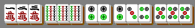

Problem 696: "Mahjong" (level 38)
The game of Mahjong is played with tiles belonging to $s$ suits . Each tile also has a number in the range $1\ldots n$, and for each suit/number combination there are exactly four indistinguishable tiles with that suit and number. (The real Mahjong game also contains other bonus tiles, but those will not feature in this problem.)
A winning hand is a collection of $3t+2$ Tiles (where $t$ is a fixed integer) that can be arranged as $t$ Triples and one Pair , where:
- A Triple is either a Chow or a Pung
- A Chow is three tiles of the same suit and consecutive numbers
- A Pung is three identical tiles (same suit and same number)
- A Pair is two identical tiles (same suit and same number)
For example, here is a winning hand with $n=9$, $s=3$, $t=4$, consisting in this case of two Chows, two Pungs, and one Pair:

Note that sometimes the same collection of tiles can be represented as $t$ Triples and one Pair in more than one way. This only counts as one winning hand. For example, this is considered to be the same winning hand as above, because it consists of the same tiles:

Let $w(n, s, t)$ be the number of distinct winning hands formed of $t$ Triples and one Pair, where there are $s$ suits available and tiles are numbered up to $n$.
For example, with a single suit and tiles numbered up to $4$, we have $w(4, 1, 1) = 20$: there are $12$ winning hands consisting of a Pung and a Pair, and another $8$ containing a Chow and a Pair. You are also given that $w(9, 1, 4) = 13259$, $w(9, 3, 4) = 5237550$, and $w(1000, 1000, 5) \equiv 107662178 \pmod{1\,000\,000\,007}$.
Find $w(10^8, 10^8, 30)$. Give your answer modulo $1\,000\,000\,007$.